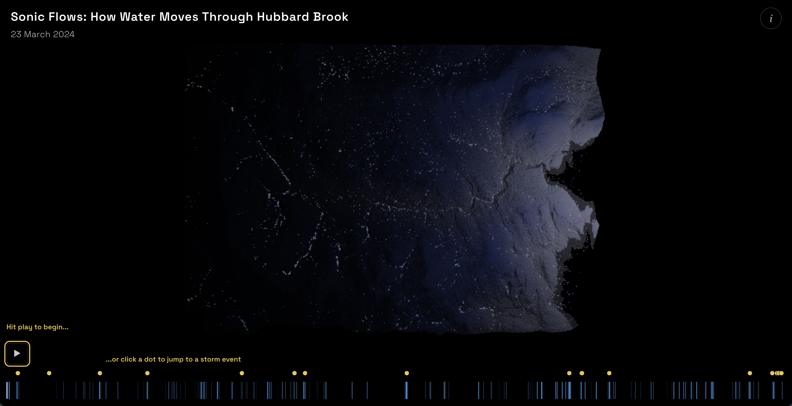
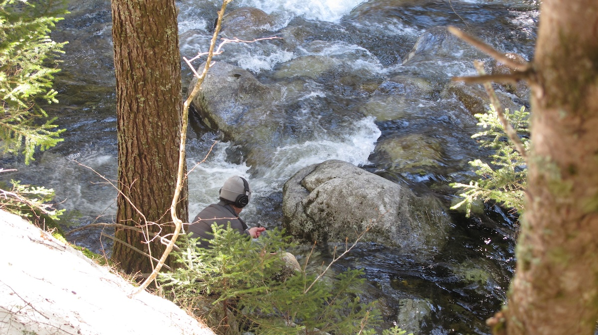
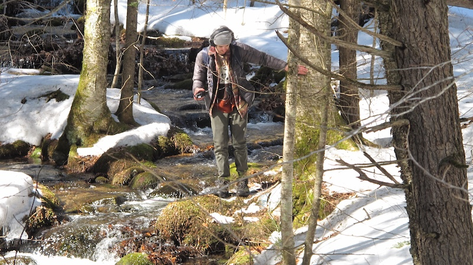
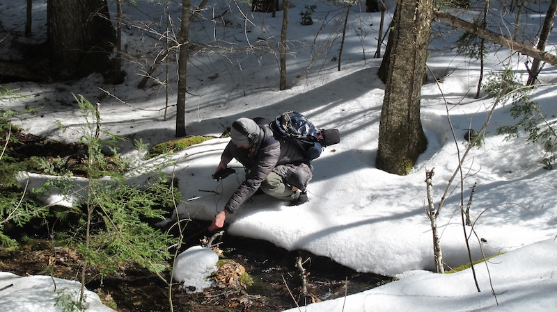
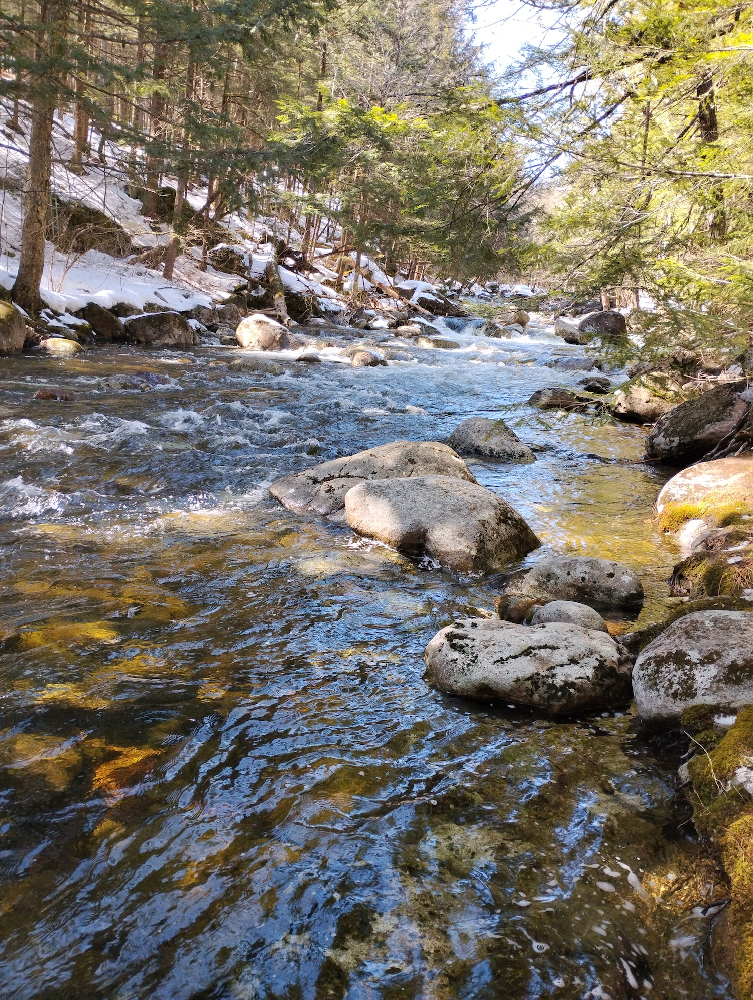
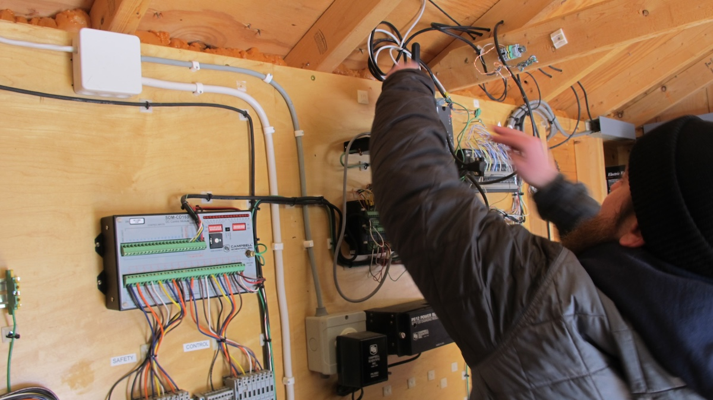

COMMISSIONED BY
ROLE
concept, sound design, sonification, programming
ABOUT
This project was a submission to the inaugural Hubbard Brook Data Jam, a call to transform real environmental data into art, sound, and multisensory projects. After being reviewed by a panel of judges, Sonic Flows won 3rd place in the competition and was awarded best technical implementation for multisensory experience. The project was a group effort along with a few members of Decibels, an online community of data sonification artists and practitioners. I took the lead as the main sound designer and data sonification artist.
Sonic Flows, is an audiovisual experience capturing how water moves through Hubbard Brook. Using one year of data, the piece captures how precipitation can relate to streamflow and soil moisture of the course of one year. The experience was created with two modes in mind: it can be listened to passively in its entirety, as a gentle ambient sonic journey with events throughout. Or it can be experienced "on demand" by clicking on the yellow dots in the interface to jump to large stream flow events (i.e. where streamflow speed increases significantly). Each data variable has been turned into sound to capture the emotional quality of water and how it moves. In addition, field recordings of the Hubbard Brook watershed are interwoven throughout the piece to retain a sense of place and connection to the natural soundscape of the forest.


ben recording water sounds in the field with a microphone and a portable recorder

You can experience Sonic Flows by clicking here. The piece is best experienced with headphones, and you can click on the yellow dots to jump to large stream flow events. You can also see our submission with more project details, along with browsing other data jam submissions, at the Hubbard Brook Data Jam showcase site

the main watershed of Hubbard Brook

example of environmental sensors and a field technician inside of a shed.